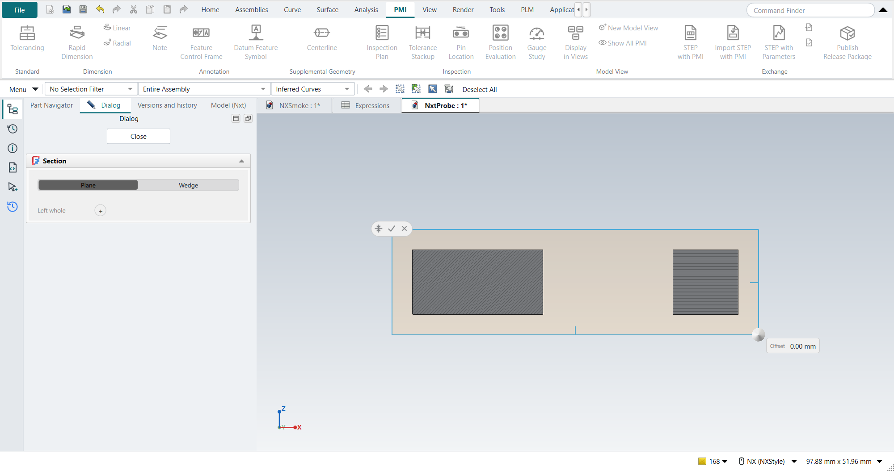
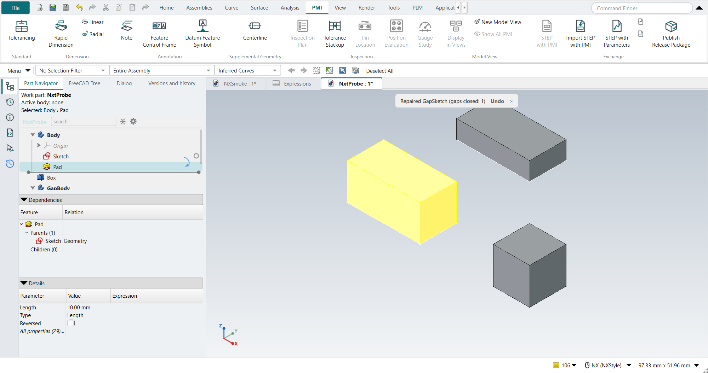
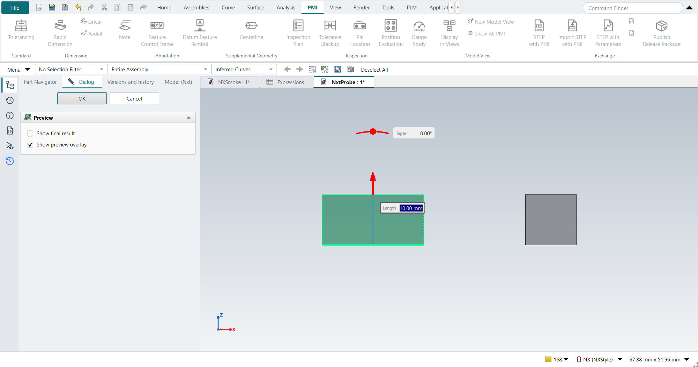

FreeCAD-Nxt (trial)
FreeCAD-Nxt is a FreeCAD add-on by Joe (obelisk79), in the style of Fusion and Onshape and built on Qt Quick.
It adds a model panel with a rollback bar, a Property Inspector, drag-handle value boxes, its own fillet and chamfer, a section view with filled cut faces, Isolate and Quick Mass.
NX-Style bundles it, unmodified, as a git submodule (vendor/FreeCAD-Nxt, version 0.5.15), and it is off by default.
This is the first of several steps that bring parts of it into NX’s commands; for now it runs beside NX-Style as it is.

Turning it on
-
python launch_nx.py --nxtstarts with it once. -
"nxt": truein the settings switches it on for good.
It needs FreeCAD 1.1 or newer; on FreeCAD 1.0 the launcher says so and starts without it.
Its commands are under Menu › View › FreeCAD-Nxt, and its panel becomes the Part Navigator (below).
A copy of Nxt installed in the NX profile’s own Mod folder (through the Addon Manager) is used instead of the bundled one, so it never loads twice; FreeCAD loads that copy whether or not --nxt is given.
Nxt is not a workbench: it is a freecad.nxt package that adds its panel and commands to every workbench.
What NX-Style changes in it
Nothing in Nxt’s code. In the NX profile, NX-Style:
-
sets one of Nxt’s own preferences before Nxt starts: CheckAddonUpdates off. Nxt otherwise looks for updates of every installed add-on after start-up and offers the Addon Manager’s Update all dialog; NX-Style’s add-ons are pinned versions, updated with NX-Style itself.
-
gives a few of Nxt’s words NX’s names, through a Qt translation file (
resources/nxt/nx_names.ts): its panel is the Part Navigator, and Roll back to here and Roll forward to here are Make Current Feature. -
adds Edit Parameters to Nxt’s MB3 menu on a feature, through Nxt’s own menu files (
resources/nxt/nx_menu.toml). -
arranges Nxt’s panel as the Part Navigator, and settles the keys both handle (below).
Nxt’s panel as the Part Navigator

With Nxt on, Nxt’s model panel is the Part Navigator:
-
It is the first tab of the left tab strip, and the Resource Bar’s Part Navigator button opens it. The status strip (work part, active body, suppressed and failed features) sits above its tree, three lines high; it scrolls when there is more. It keeps that height: with the strip growing and shrinking right above Nxt’s tree on each pick, making and picking 25 blocks took 100 s instead of 4 s.
-
FreeCAD’s own tree stays one tab behind it, as FreeCAD Tree.
-
Nxt’s rollback bar is NX’s Make Current Feature. Drag the bar, or use Make Current Feature in the MB3 menu or on the ribbon: either sets the Body’s current feature, and the bar follows. Nxt confirms with a note (Current feature of Body: Pad) that has an Undo button.
-
Below the tree are NX’s Dependencies and Details panels, folded away until you open them, as in NX. They describe the one selected object.
-
Dependencies lists its parents (what it is built from) and its children (what uses it), each with the kind of link: Geometry, Attachment, Expression or Link. These are the links Nxt’s dependency arrows show, and Nxt draws the arrows in the tree while the panel is open. A sketch shown under its Pad, which gets no arrow, is still listed as its parent. Double-click a row to select that object.
-
Details lists the values that define it: those Nxt’s detail strip shows, such as an Extrude’s Length, Type and Reversed. Type a value (or
=and an expression) and press Enter; each change is one undo step. All properties opens Nxt’s Property Inspector.
-
-
The MB3 menu of a feature in Nxt’s tree has NX-Style’s Edit Parameters, which opens NX-Style’s Extrude, Revolve, primitive and Thread dialogs.
What works on FreeCAD 1.1.4
Measured with the self-test (--smoke-test --nxt) on FreeCAD 1.1.4 (Qt 6.8.3), Windows 11.
| Nxt feature | FreeCAD 1.1.4 | What was seen |
|---|---|---|
Model panel (tree, timeline) |
works |
Is the Part Navigator (above). |
Dependency arrows |
works |
Drawn while the Dependencies panel is open. |
Detail strip values |
works |
The same values are in the Details panel, editable there. |
Property Inspector |
works |
Opens beside the panel for the selected feature. |
Isolate |
works |
Shows only the selection; leaving it shows everything again. |
Section view, filled cut faces |
works |
The cut faces are hatched; the plane can be dragged, with an Offset box. |
Quick Mass |
works |
The mass bar appears at the bottom of the graphics window. |
Drag handles with value boxes |
works |
Editing a Pad shows FreeCAD’s two arrows and two taper handles, with Nxt’s Length and Taper boxes beside them. |
Nxt fillet and chamfer |
works |
Opens its task panel and makes an |
Rollback (the Body’s tip) |
works |
Nxt’s panel moves the tip back to the Sketch and forward to the Pad. |
Menu entry |
works |
Menu › View › FreeCAD-Nxt lists Nxt’s commands. |

Nxt’s drag handles are FreeCAD’s own ("gizmos"), which FreeCAD 1.1 already has; nothing above needed a FreeCAD 26.x build. Nxt’s author works on FreeCAD 26.3 (Qt 6.11); its context menu uses a Qt 6.8 feature, which FreeCAD 1.1.4 ships. Not exercised yet: drag reorder in the tree and face snapping, which need real mouse work in Nxt’s Qt Quick panel and the graphics window.
The tutorials with Nxt on
Nxt is not ready to be on by default: with it on, NX-Style’s own Extrude and Revolve dialogs lose what is typed into them. All 48 tutorial replays were run with Nxt off and on, each group of tutorials in a fresh FreeCAD 1.1.4.
| Steps run | FAILED | Steps not run after a failure | |
|---|---|---|---|
Nxt off |
771 |
6 |
0 |
Nxt on |
742 |
25 |
40 |
The six with Nxt off fail with Nxt on too, the same way, and have nothing to do with Nxt (three Ctrl+S save checks, an Orient View, and two steps of the Carbon tutorial that tutorial AN runs). The regressions with Nxt on:
-
Extrude and Revolve values are lost (tutorials AE, AF, AJ: an End of 20 or 60 mm gives FreeCAD’s default 10 mm; AO: Revolve takes none of the 10 picked curves). Nxt replaces FreeCAD’s Pad, Pocket and Revolve parameter boxes with its own cards; with that replacement removed, tutorial AE replays as with Nxt off, while switching off only Nxt’s floating value boxes does not help. Revolve’s box is replaced the same way; that AO fails for the same reason is likely but was not tested on its own. Nxt has no setting for the replacement yet.
-
Offset Curve in a sketch (tutorial I): the Add offset constraint option does not take, so the offset loop stays where the click put it (14.6 mm instead of 15). It repeats; the cause is not yet known.
-
Datum Plane, Datum Axis and Hole (tutorial AN): a typed offset reads 0, the datum axis stays unattached, and the Hole’s sketch does not start. The cause is not yet known.
The other tutorials (A to H, J to Z, AA to AD, AG, AH, AK, AP to AY) replay as with Nxt off.
Where it meets NX-Style
Measured with the self-test, Nxt on against Nxt off:
| Where | With Nxt on |
|---|---|
Space in the graphics window |
FreeCAD’s Show/Hide ( |
Home, End |
NX’s Trimetric and Isometric views, also while Nxt’s tree has the keyboard focus (Nxt keeps them there to move to the first or last row; NX-Style gives them back). |
F2 |
Renames the selected feature in Nxt’s tree, as in FreeCAD’s. (Nxt’s tree does not claim the key ahead of the window’s shortcuts, and without that it never reached the tree; NX-Style claims it for Nxt’s tree.) |
Toolbars |
Nxt adds a toolbar of its own (Nxt Fillet/Chamfer) when Part Design starts. NX-Style hides it like FreeCAD’s toolbars; its commands are under Menu › View › FreeCAD-Nxt. |
Model panel |
Nxt’s panel is the Part Navigator; FreeCAD’s tree is the FreeCAD Tree tab behind it. |
Speed |
Nxt’s tree does more work on each change of the document while it is on screen, and as the Part Navigator it usually is. Changing and picking an object took 0.34 s with Nxt’s tree shown against 0.24 s with it behind a tab, in a part of 150 objects; at 20 objects there was no difference. The self-test, which builds large parts, runs about twice as long as with Nxt’s panel behind FreeCAD’s tree. |
Colours |
Nxt takes its colours from the window around it: background |
Drag-handle preferences |
On its first run Nxt sets two FreeCAD preferences that no FreeCAD page shows: a plain drag moves in fine steps and Ctrl gives coarse ones (FreeCAD: coarse first, Shift for fine). Nxt records what it replaced and puts it back when it is disabled or removed. |
Sketch profiles |
Nxt’s sketch repair is on, and changes the sketch without asking: a Pad on a rectangle with a 0.01 mm gap, which fails with Nxt off, is valid with Nxt on, because Nxt added a Coincident constraint. It offers Undo afterwards. |
Task dialogs |
Nxt replaces the parameter boxes of FreeCAD’s Pad, Pocket and Revolve dialogs, which NX-Style’s Extrude and Revolve drive (see the tutorials above). |
Turning it off again
Leave out --nxt, or set "nxt": false (the default).
Nxt’s own settings stay in the NX profile’s user.cfg under Mod/Nxt; they do nothing while Nxt is off.
Licence
FreeCAD-Nxt is LGPL-2.1-or-later, as NX-Style is, and included unmodified. Changes it needs go to its own repository.